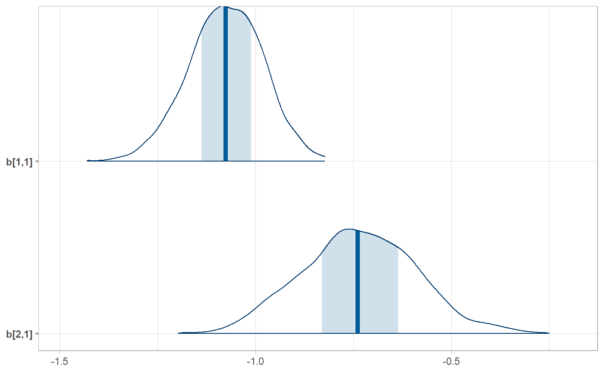
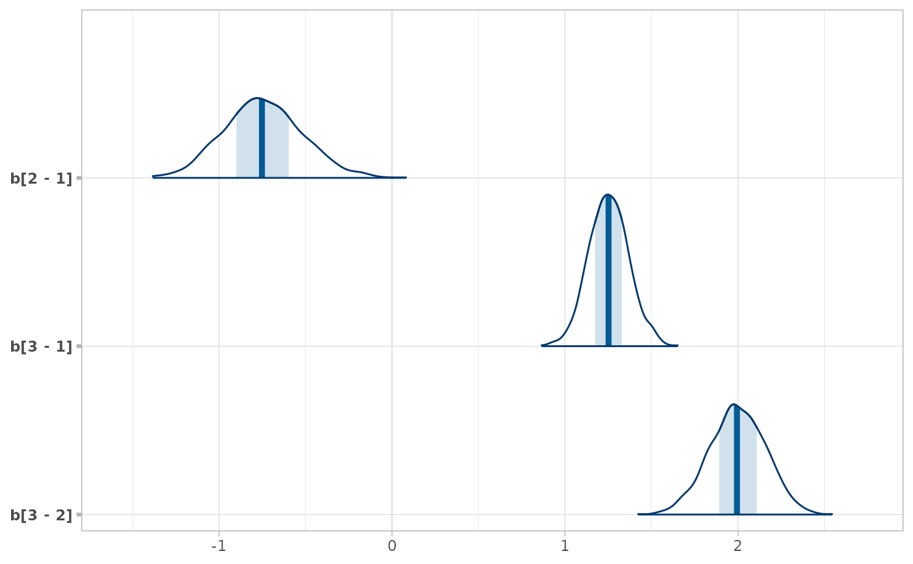

R/ungather_draws.R, R/unspread_draws.R
unspread_draws.RdInverse operations of spread_draws() and gather_draws(), giving
results that look like tidy_draws().
A tidy data frame of draws, such as one output by spread_draws or gather_draws.
Expressions in the form of
variable_name[dimension_1, dimension_2, ...]. See spread_draws().
The name of the column in data that contains the names of variables from the model.
The name of the column in data that contains draws from the variables.
Character vector of column names in data that
should be treated as indices of draws. The default is c(".chain",".iteration",".draw"),
which are the same names used for chain, iteration, and draw indices returned by
spread_draws() or gather_draws().
Drop the columns specified by draw_indices from the resulting data frame. Default FALSE.
A data frame.
These functions take symbolic specifications of variable names and dimensions in the same format as
spread_draws() and gather_draws() and invert the tidy data frame back into
a data frame whose column names are variables with dimensions in them.
library(dplyr)
data(RankCorr, package = "ggdist")
# We can use unspread_draws to allow us to manipulate draws with tidybayes
# and then transform the draws into a form we can use with packages like bayesplot.
# Here we subset b[i,j] to just values of i in 1:2 and j == 1, then plot with bayesplot
RankCorr %>%
spread_draws(b[i,j]) %>%
filter(i %in% 1:2, j == 1) %>%
unspread_draws(b[i,j], drop_indices = TRUE) %>%
bayesplot::mcmc_areas()

# As another example, we could use compare_levels to plot all pairwise comparisons
# of b[1,j] for j in 1:3
RankCorr %>%
spread_draws(b[i,j]) %>%
filter(i == 1, j %in% 1:3) %>%
compare_levels(b, by = j) %>%
unspread_draws(b[j], drop_indices = TRUE) %>%
bayesplot::mcmc_areas()
